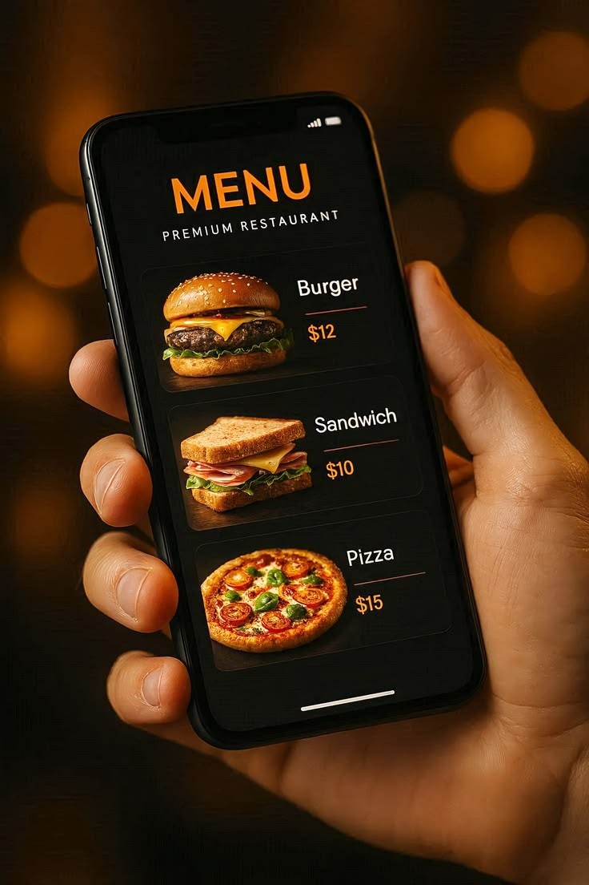

Fast365AB provides reliable food delivery support for restaurants, cafés and businesses across Sweden. Our team ensures meals are delivered quickly and safely while maintaining high service standards.
Contact Us
At Fast365AB we support restaurants and food businesses by providing professional delivery services across Sweden. Our trained team ensures that food reaches customers quickly and safely while helping businesses expand their reach and improve customer satisfaction.
Our delivery partners collect meals directly from restaurants and food businesses while ensuring proper handling and safety.
Orders are transported quickly using an optimized delivery network designed to minimize delays and maintain quality.
Meals are delivered carefully to customers while maintaining professional service standards and hygiene protocols.